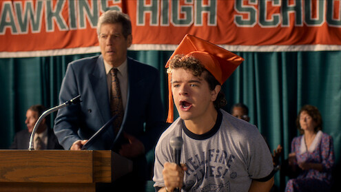
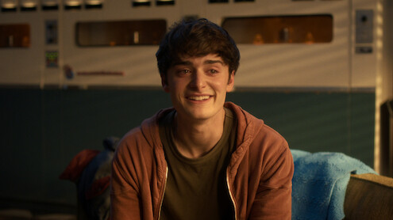

Hawkins, 1983.
Temporada 1 · 2016 · 8 episódios
O desaparecimento de Will Byers transforma a rotina de uma pequena cidade. Enquanto Joyce busca o filho e Hopper investiga o laboratório de Hawkins, Mike, Dustin e Lucas encontram Eleven, uma menina com poderes extraordinários. Uma amizade improvável se torna a chave para um mistério que atravessa as fronteiras do nosso mundo.
Explore no Netflix TudumAntes de atravessar,
aperte o play.
Trailer oficial · Temporada 1
Áudio original em inglês.
Os trailers podem revelar acontecimentos da temporada. Assistir na fonte oficial
Quem atravessa
com você.
Personagens em destaque.
Fotos de divulgação da série.
Eleven
Millie Bobby Brown

Dustin Henderson
Gaten Matarazzo

Will Byers
Noah Schnapp